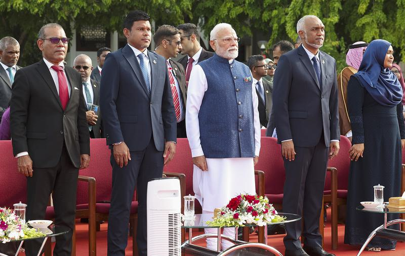

Modi, Muizzu Signal Major Reset in Bilateral Relations
July 27, 2025
International Relations
The Hindu
Prime Minister Narendra Modi's recent visit to the Maldives marks a significant reset in bilateral ties, emphasizing deepened cooperation across various sectors after a period of strained relations.

A symbolic representation of renewed India-Maldives cooperation.
English Notes:
- Significant Reset: PM Modi's two-day state visit to Maldives signals a major positive shift in bilateral ties, which had soured after President Mohamed Muizzu's 2023 'India Out' campaign.
- Deepening Ties: India aims to deepen cooperation across multiple sectors, highlighted by PM Modi's emphasis on "bipartisan support" for the "strong and time-tested" friendship within Maldives.
- Key Engagements: PM Modi held talks with diverse Maldivian leaders, including Vice-President Uz. Hussain Mohamed Latheef, Speaker Abdul Raheem Abdulla, former President Mohamed Nasheed, and Opposition members, indicating broad engagement.
- Symbolic Gestures & Agreements:
- Inauguration of a new Maldives' Ministry of Defence building and other jointly executed infrastructure projects in Malé.
- Signing of multiple Memorandums of Understanding (MoUs) and agreements.
- PM Modi attended Maldives' 60th Independence Day event.
- Maldivian Perspective (President Muizzu):
- Acknowledged Maldives' need for "certain resources and technical expertise" from other nations, balancing sovereignty with external support, especially for economic pressures.
- Asserted India as the "closest and most trusted partner," marking 60 years of diplomatic relations as a "milestone" reflecting shared history and resilient partnership.
- Political Shift in Maldives: The political opposition in Maldives welcomed the Muizzu government’s shift in its India policy, suggesting a "realisation" of the necessity to work with India.
- Implications: This reset is crucial for regional stability, maritime security, and India's 'Neighbourhood First' policy, fostering renewed trust and cooperation after a period of diplomatic challenges.
हिंदी नोट्स (Hindi Notes):
- महत्वपूर्ण बदलाव: पीएम मोदी की मालदीव की दो दिवसीय राजकीय यात्रा द्विपक्षीय संबंधों में एक बड़ा सकारात्मक बदलाव का संकेत है, जो राष्ट्रपति मोहम्मद मुइज्जू के 2023 के 'इंडिया आउट' अभियान के बाद तनावपूर्ण संबंधों के दौर के बाद आया है।
- संबंधों को गहरा करना: भारत कई क्षेत्रों में सहयोग को गहरा करने की उम्मीद कर रहा है, जिसे मालदीव के भीतर "मजबूत और समय-परीक्षित" दोस्ती के लिए "द्विपक्षीय समर्थन" पर पीएम मोदी के जोर से उजागर किया गया है।
- मुख्य जुड़ाव: पीएम मोदी ने मालदीव के विभिन्न नेताओं, जिनमें उपराष्ट्रपति उज़. हुसैन मोहम्मद लतीफ़, संसदीय अध्यक्ष अब्दुल रहीम अब्दुल्ला, पूर्व राष्ट्रपति मोहम्मद नशीद और विपक्षी सदस्य शामिल हैं, के साथ बातचीत की, जो व्यापक जुड़ाव को दर्शाता है।
- प्रतीकात्मक संकेत और समझौते:
- माले में मालदीव के रक्षा मंत्रालय के एक नए भवन और अन्य संयुक्त रूप से निष्पादित बुनियादी ढांचा परियोजनाओं का उद्घाटन।
- कई समझौता ज्ञापनों (एमओयू) और समझौतों पर हस्ताक्षर।
- पीएम मोदी ने मालदीव के 60वें स्वतंत्रता दिवस समारोह में भाग लिया।
- मालदीव का परिप्रेक्ष्य (राष्ट्रपति मुइज्जू):
- मालदीव की संप्रभुता को बाहरी समर्थन, विशेष रूप से आर्थिक दबावों से निपटने के लिए, अन्य देशों से "कुछ संसाधनों और तकनीकी विशेषज्ञता" की आवश्यकता को स्वीकार किया।
- भारत को "सबसे करीबी और सबसे भरोसेमंद भागीदार" बताया, जिसमें राजनयिक संबंधों के 60 साल पूरे होने को एक "मील का पत्थर" बताया, जो साझा इतिहास और लचीली साझेदारी को दर्शाता है।
- मालदीव में राजनीतिक बदलाव: मालदीव में राजनीतिक विपक्ष ने मुइज्जू सरकार की भारत नीति में बदलाव का स्वागत किया, जो भारत के साथ काम करने की आवश्यकता की "समझ" का सुझाव देता है।
- निहितार्थ: यह बदलाव क्षेत्रीय स्थिरता, समुद्री सुरक्षा और भारत की 'पड़ोसी पहले' नीति के लिए महत्वपूर्ण है, जो राजनयिक चुनौतियों के दौर के बाद नए सिरे से विश्वास और सहयोग को बढ़ावा देता है।